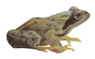

В январском номере журнала Antimicrobial Agents and Chemotherapy за 2008 г. опубликовано сообщение об открытии природных веществ, содержащихся в коже лягушек и способных ингибировать полирезистентные штаммы бактерий, которые вызывают нозокомиальные инфекции.
В январском номере журнала Antimicrobial Agents and Chemotherapy за 2008 г. опубликовано сообщение об открытии природных веществ, содержащихся в коже лягушек и способных ингибировать полирезистентные штаммы бактерий, которые вызывают нозокомиальные инфекции.
Резистентность микроорганизмов к применяемым в настоящее время антимикробным препаратам растёт как среди возбудителей нозокомиальных инфекций, так и среди патогенов, вызывающих инфекционные заболевания во внебольничных условиях. Некоторые штаммы микроорганизмов резистентны ко всем имеющимся на данный момент в арсенале врача антимикробным препаратам, поэтому вероятность возвращения в преантибиотическую эру представляет собой весьма растущую угрозу. В связи с этим разработка новых методов лечения инфекций имеет первостепенную значимость.
Исследователи из Италии открыли антимикробные белки, которые, по их мнению, являются наиболее перспективной основой для разработки новых методов лечения бактериальных инфекций в будущем, и больше всего их содержится в коже земноводных.

В проведенном исследовании ученые протестировали in vitro бактерицидную активность пяти антимикробных белков (темпорины А, В и С, эскулетин 1b и бомбинин Н2), полученных от трёх различных видов лягушек и жаб (Rana temporaria, Rana esculenta и Bombina variegata), на наличие антибактериальной активности в отношении полирезистентных штаммов микроорганизмов, чаще всего вызывающих нозокомиальные инфекции у человека (Staphylococcus aureus, Еnterococcus faecium, Pseudomonas aeruginosa, Stenotrophomonas maltophilia, Acinetobacter baumanni). Первоначальные результаты показали, что все белки действовали как антимикробные вещества в отношении всех тестируемых штаммов. Дальнейшие исследования выявили активность темпоринов преимущественно в отношении грамположительных бактерий, особенно при оценке действия в сыворотке крови человека; эскулетин 1b вызывал антибактериальный ответ в течение 2-20 минут от начала воздействия, особенно в отношении грамотрицательных микроорганизмов, а бомбинин Н2 оказывал подобное действие в отношении всех штаммов бактерий.
Ученые пришли к выводу, что эти белки могут быть использованы для разработки новых антимикробных препаратов для лечения инфекционных заболеваний, вызванных полирезистентными штаммами.
Mangoni M.L., Maisetta G., Luca M.D., et al.
Comparative analysis of the bactericidal activities of amphibian peptide analogues against multidrug-resistant nosocomial bacterial strains.
Antimicrob Agents Chemother, 2008; 52(1): 85-91.